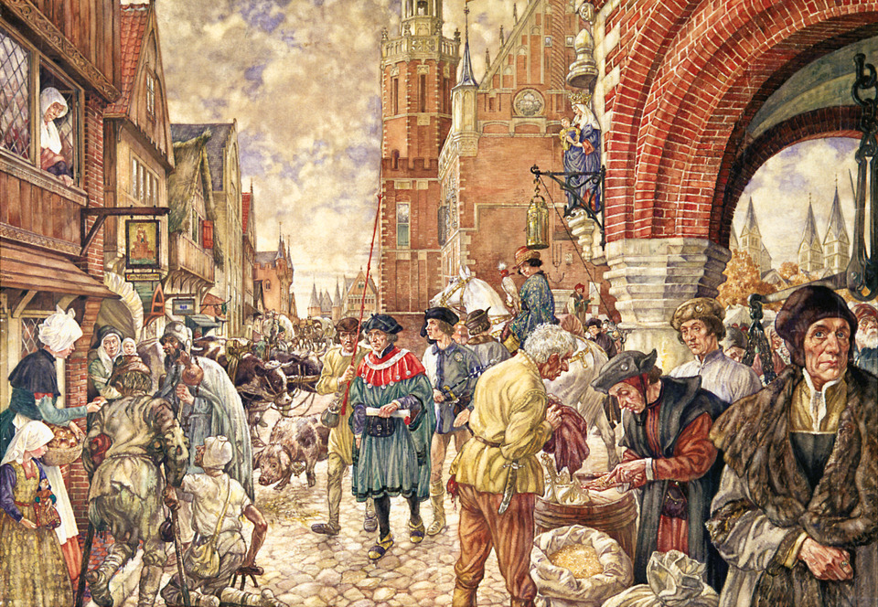

HoofdStuk 6.2

--------------------------------
Zelfstandige Burgers
Op een zomerdag in 1296 vertrok Floris V, graaf van Holland en Zeeland, uit Utrecht om op jacht te gaan in het Loosdrechtse Bos. Toen hij daar aankwam, werd hij ineens omringd door een groep lagere edelen die hem daar hadden opgewacht (afbeelding 12). Ze namen de graaf gevangen en ontvoerden hem naar het Muiderslot. Boeren en stadsbewoners waren woedend.
Gewapend met mestvorken trokken ze naar het kasteel en eisten de vrijlating van hun geliefde graaf. De edelen probeerden met Floris te vluchten. Toen dit ontdekt werd, trok één van de edelen zijn zwaard en stak de graaf van Holland dood.
In de tijd van Floris V bestond het gebied van Nederland, België en Luxemburg uit zeventien graafschappen, hertogdommen en andere gewesten (provincies). Ze werden samen de Nederlanden (lage landen) genoemd. Holland werd één van de belangrijkste gewesten. Vanaf de 12e eeuw breidden de graven van Holland hun gebied flink uit en werden bijvoorbeeld ook graaf van Zeeland.
Vooral Floris V had succes. Hij veroverde Waterland, Amstelland, West-Friesland, het Gooi en Woerden. Om zijn macht en rijkdom te tonen, liet hij op het terrein van zijn hof in Den Haag (het Binnenhof) een indrukwekkende zaal bouwen: de Ridderzaal (afbeelding 11). Maar andere edelen waren ontevreden over de groeiende macht van graaf Floris. Daarom namen ze hem in 1296 gevangen en werd hij daarna vermoord.
Terug
Meer Afbeeldingen